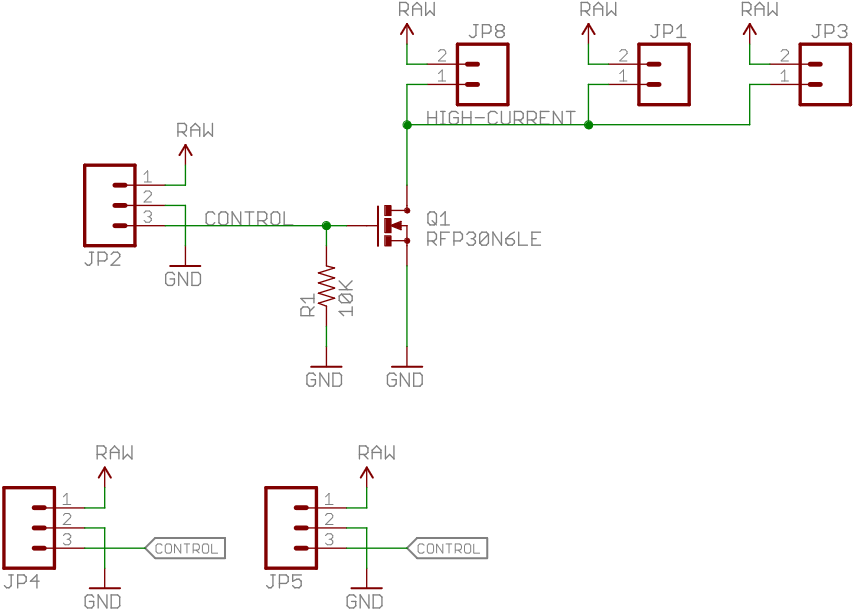

Overview
The Mbed-Pi security system (MPSS) is an embedded security system that uses the mbed LPC1768 microcontroller and a Raspberry Pi. The MPSS is designed with a camera that broadcasts its feed on the local network. It uses an array of microphones to detect abnormal sound levels, and swivel the camera in the direction of the sound. The system is designed to be inexpensive and easy to setup. The following site documents the required components, their physical setup, and the code required to run the MPSS.
List Of Parts
- mbed LPC1768
- Raspberry Pi (Any Raspberry Pi model works, including Pi Zero)
- SPW2340 x 4 - Adafruit Silicon MEMS Microphone
- Motor Driver - Sparkfun MOSFET driver
- DC Motor with 48:1 gear ratio (The gear ratio is changeable)
- Barrel Jack Battery Holder
- Barrel Jack External Supply
- Barrel Jack Breadboard Adapter
- Solderless Breadboard x 5
Steps
There are four major components for this project:
- Mbed microphone input
- Mbed motor control
- Pi camera stream
- Pi email notficiation system
Mbed Microphone Input
The Mbed first needs to be connected to the four SPW2340 microphones to read their inputs.
Plug in the barrel jack breadboard adapter into the breadboard, and connect the external supply to it. Connect the ground of the power supply to the ground of the mbed. The SPW2340 microphones require 5V inputs, and since there are four microphones, it is safer to connect them to an external supply than to 'VU' on the mbed.

Plug in each microphone into an individual breadboard, and connect each microphone up to the mbed with the given wiring configuration. Use the Analog In ports 15, 16, 17, and 19. The reason for this will explained later. Point each of the four breadboards in four different directions facing opposite to each other.

SPW2340 Microphone-Mbed Wiring
Code Example - Microphone Input
Mbed Motor Control
The Mbed needs to be connected to the motor to control the direction of the Pi camera.
Connect the motor to the motor driver using the given wiring diagram.
DC Motor-Driver Wiring
The Control signal from the Motor Driver is connected to a Digital Out signal from the mbed. In the code example below, Pin 8 is used.
Last Updated: 25 April 2023
Authors: Sushant Guha, Dinyar Islam, Milan Mistry